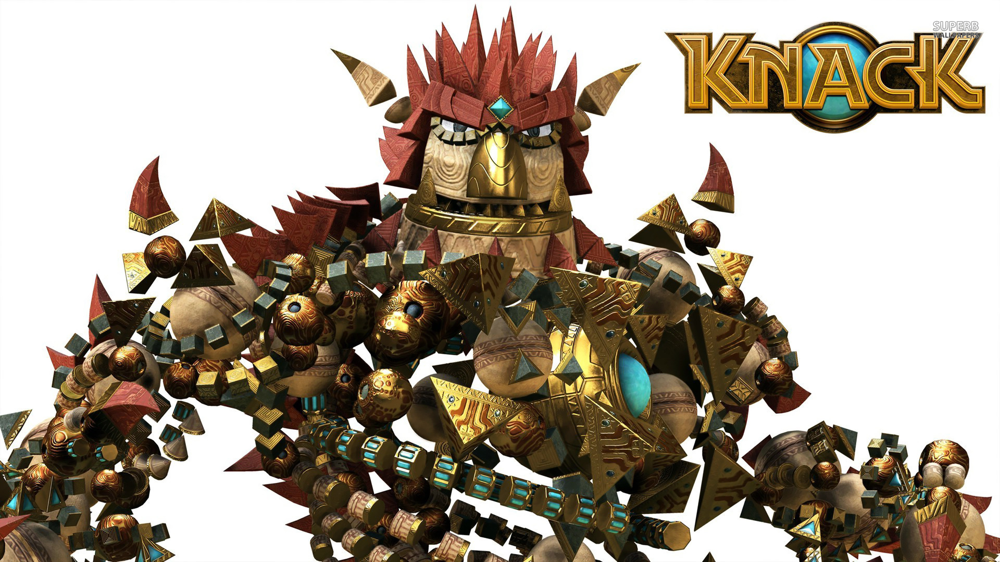
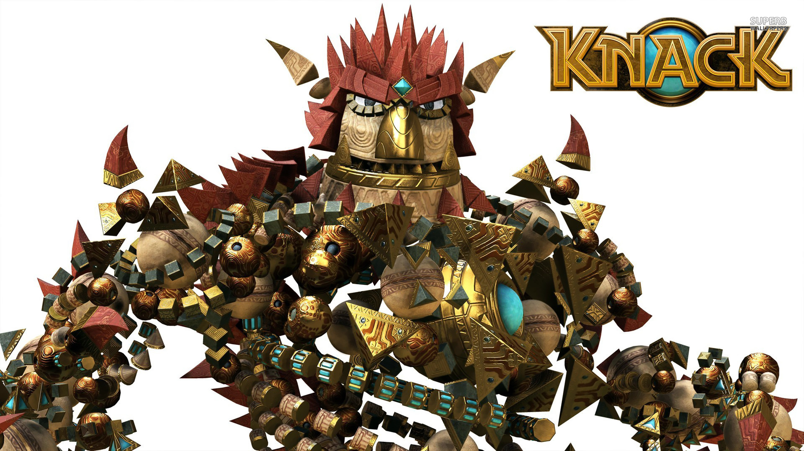
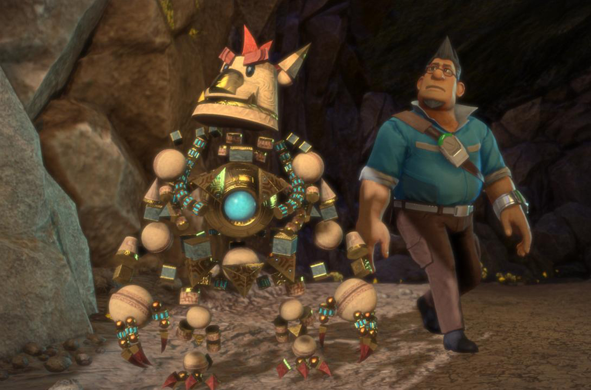
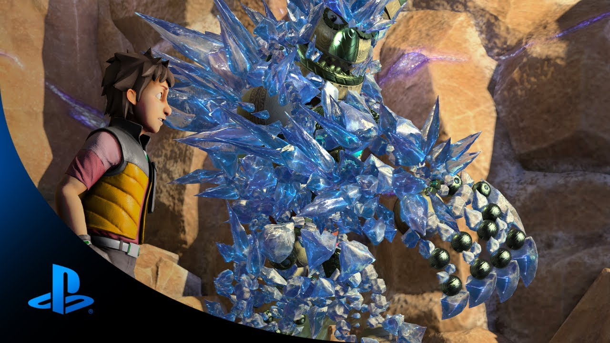
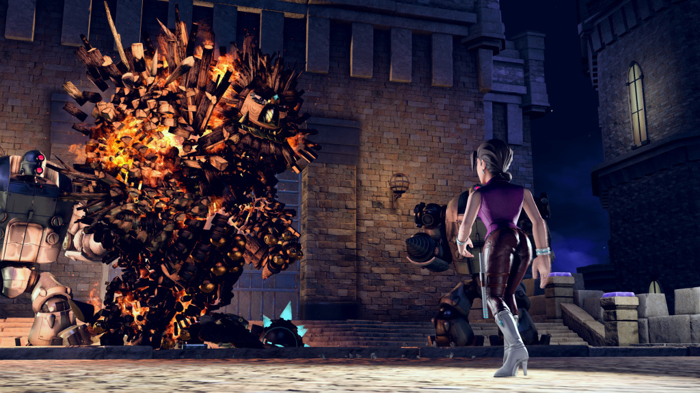

Knack

Game Trailer
Knack Gameplay Review
Review source www.digitaltrends.com
Written By Ryan Fleming on November 19, 2013
With the lead architect of the PlayStation 4 credited as the director of one of the console’s launch titles, you’d be forgiven for expecting major things from that game. At the very least, you’d be right to expect a game that uses the hardware in ways that are only possible on the new system. Unfortunately, that is only partially the case with Knack.
Written and directed by Mark Cerny (who made his first mark in games as the designer of the coin-op classic Marble Madness), Knack is the story of a somewhat adorable being that has the ability to grow in size by absorbing items known as relics, which then add to his mass. In his normal state, Knack is around three feet tall, but collect enough relics and he’ll grow as large as a building. Visually, this is represented by thousands of individual pieces of different shapes and sizes, all floating independently of each other, held together by the unseen bond that holds Knack together.
In that sense, Knack is an incredible game. No console before the PS4 could pull off this level of detail. The scaling is also something to behold. As Knack grows, his enemies shrink in size to keep the proper ratio. By the time Knack is Godzilla-sized, the world around him looks like a different place to match the new perspective. But if you take away that one – admittedly ingrained – aspect of the presentation away, the rest of the game could easily exist on the PlayStation 2, or possibly even the PS One. It is simplicity hidden behind a single, admittedly impressive technological feat.
Knack himself is a “relic,” an object created by a long lost civilization and discovered in a forgotten cavern. After an experiment infuses him with a consciousness, Knack makes the choice to help humanity. This decision thrusts him into conflict with a goblin army, using weaponry and technology far beyond the humans’ own capabilities.
As Knack and his friends investigate the goblin uprising, they are drawn into a bigger conspiracy involving humans. The relics are powerful enough that the ambitious and the ruthless want them to fuel the world despite numerous dangers, and they aren’t afraid of hurting people in the process.
When you boil it down, Knack is a simple tale of good guys versus bad guys, with a plucky hero caught in the middle. There is one obvious and telegraphed twist regarding a long-lost love interest, but it is a by-the-book story with a unique hero at its center. The animation gives a touch of life to the proceedings, and the cut scenes use the same animation style seen in-game. It deliberately veers towards cartoon-like, but it is very good CGI, on par with many of the computer-animated TV shows airing today. It has an innocent charm to it, but that doesn’t filter down to the gameplay.
The combat in Knack is very, very simple. You have a jump, and you have a special attack governed by a meter that you fill up by collecting yellow crystals littered throughout the world. When you fill a circular gauge (you can store up to three), you’re able to unleash one of Knack’s two special attacks. The crystals are everywhere, but it takes long enough to fill a full circle that you’re better off saving them for big battles, and instead focusing on Knack’s punch attack.
Some games can do a lot with a single attack button, but Knack is not one of them. You have just one non-special attack that you use over and over. There are no combos and you can’t block, only dodge, so the game is a button-masher in the most literal sense. You can pair your basic attack with a jump, but it is imprecise enough that you’ll often find yourself landing next to your target and suddenly open to an attack. Chalk this up in part to the
While the left stick moves Knack, the right thumbstick acts as a dodge. It’s the best way to avoid damage from powerful attacks, but you need to choose wisely when you want to use it. There is a moment after every dodge when you are left vulnerable and unable to move. It‘s less than a second, but it’s enough to leave you open to attack.
And that is the entire combat system. You move from one linear path to another, mashing the punch button and unleashing a special attack every now and then. The enemies show some variety, but only a modicum. One goblin might shoot a gun, while another shoots acid. One giant robot has a shield, another has a drill on its hand. They all attack in similar patterns though, and the key to victory is to wait for them to finish their animation, then punch away.
The attack patterns are simple and easy to figure out. Even as you grow and face larger enemies, the mechanics of combat remain the same. You become more powerful though, which allows you to go on a rampage of sorts. Smashing through enemies that minutes ago were causing you grief is a satisfying highlight, but you don’t do this enough. You’ll only get to terrorize the enemies a handful of times throughout the game; the majority of your time is spent as the yard-tall Knack, or just slightly above that.
Knack’s biggest issue is simply a case of misplaced expectations. It’s an exclusive PS4 launch title written and directed by the guy that designed the console. Anything less than a mind-blowing experience would struggle to live up to the expectations that gamers have for their newly purchased next-gen hardware. Putting that aside, Knack is a simple diversion. The story and the gameplay are basic and familiar, but it’s inoffensive enough that anyone can pick it up. It may not be the “killer app” exclusive people were hoping for at the PS4’s launch, but it’s not without its charm.